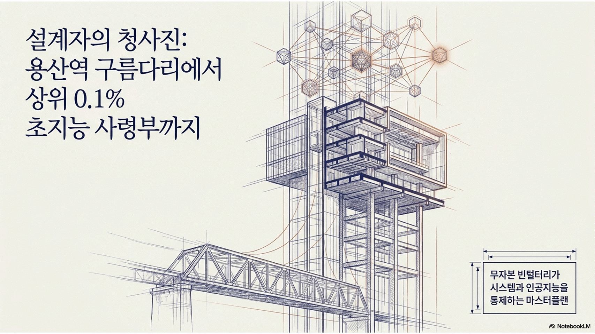
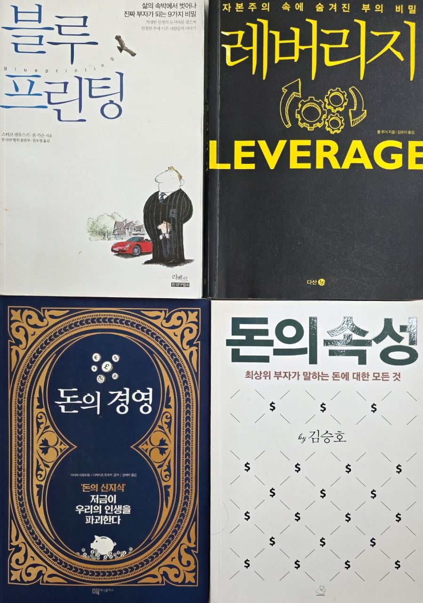
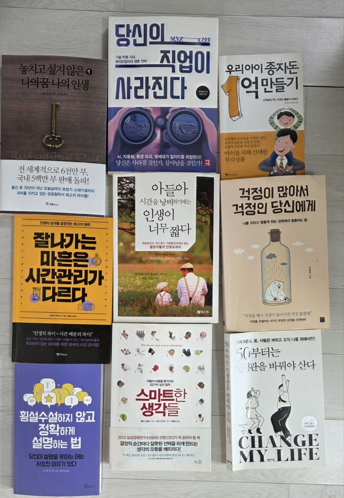
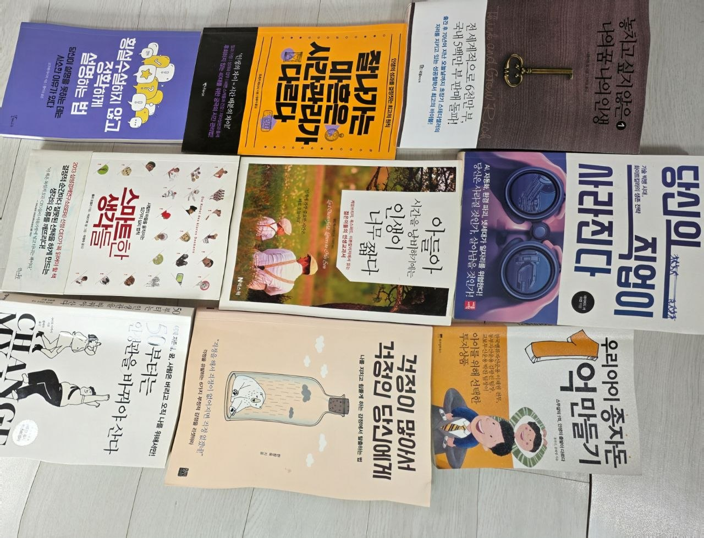
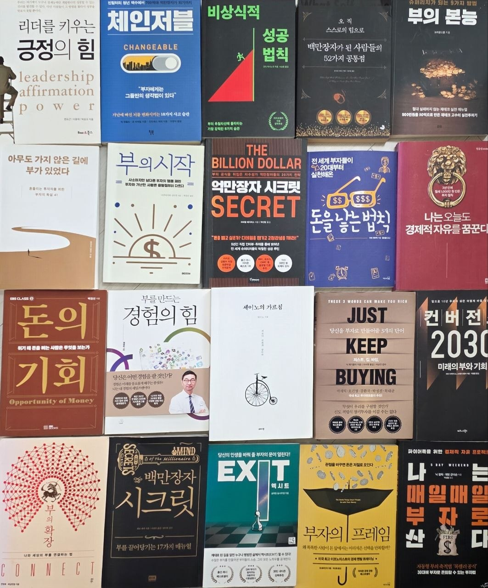
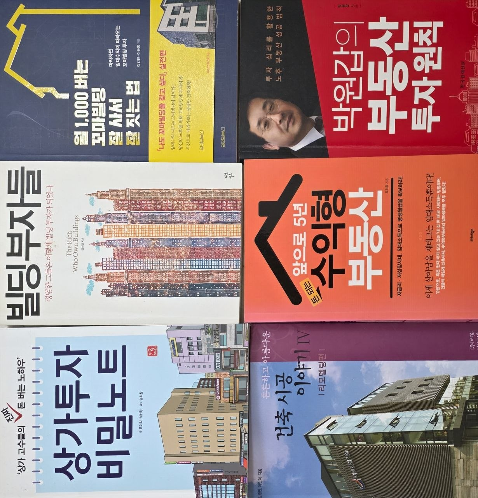
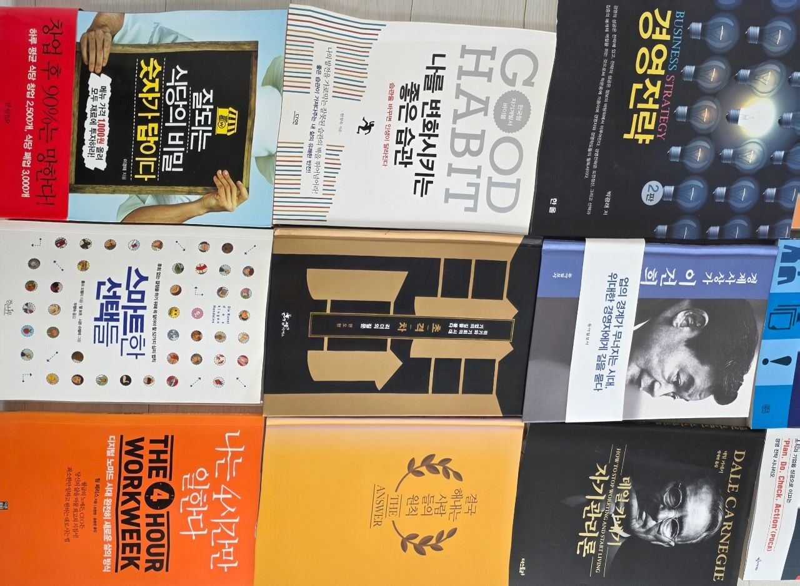
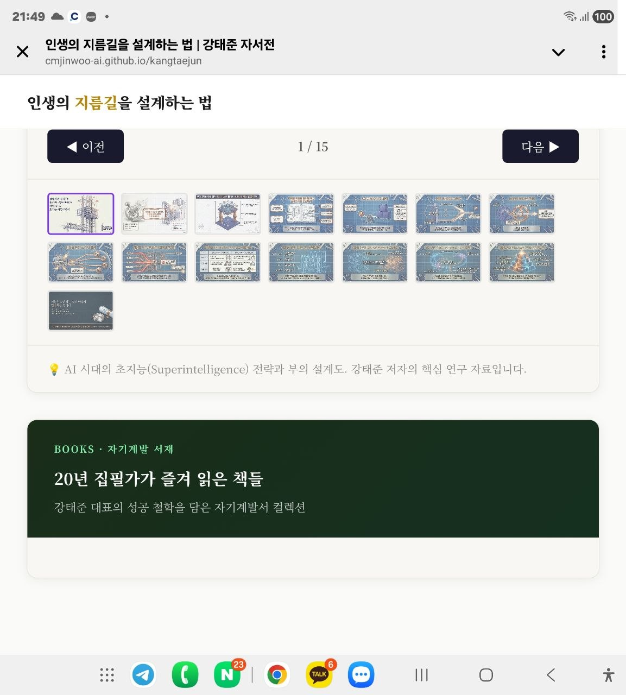
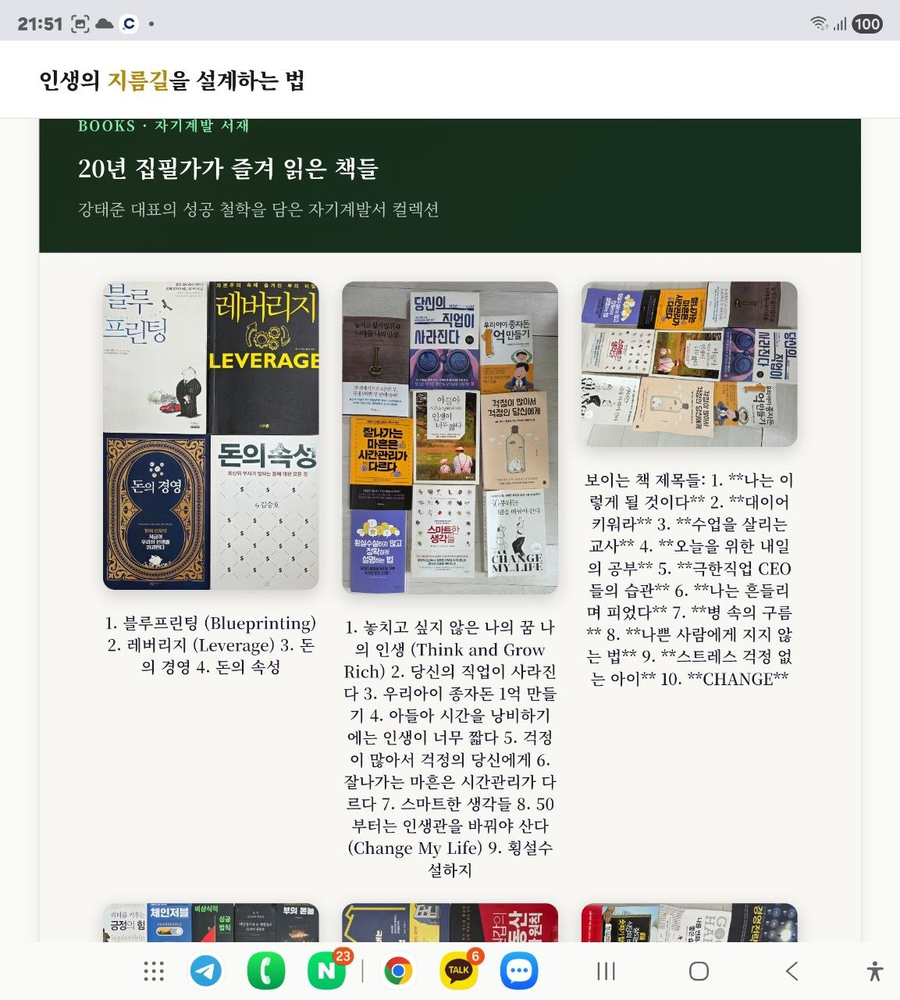
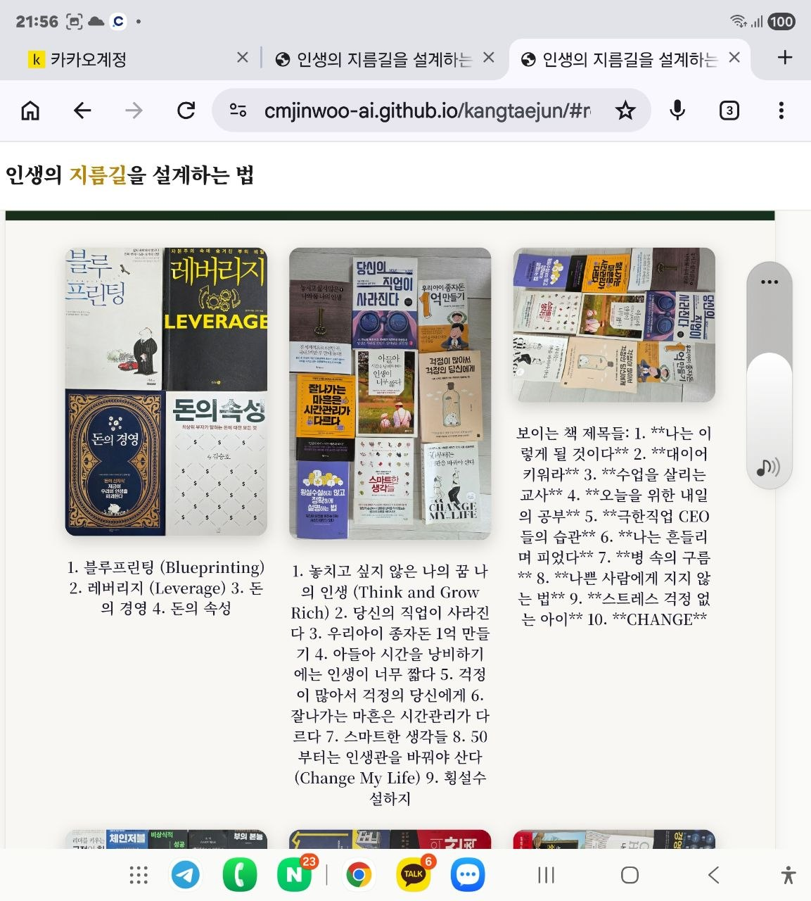

📄 자료실
성공의 지름길 — 강의 자료 및 연구 문서
용산역 구름다리에서 AI 사령부까지
강태준의 '상위 1%' 성공 설계도 — 인생 4단계 전략 로드맵

이미지를 탭하면 전체화면으로 볼 수 있습니다.
The Superintelligence Blueprint
초지능 시대의 부와 전략 설계도 · 15 슬라이드

💡 AI 시대의 초지능(Superintelligence) 전략과 부의 설계도. 강태준 저자의 핵심 연구 자료입니다.
20년 집필가가 즐겨 읽은 책들
강태준 대표의 성공 철학을 담은 자기계발서 컬렉션

1. 블루프린팅 (Blueprinting) 2. 레버리지 (Leverage) 3. 돈의 경영 4. 돈의 속성

1. 놓치고 싶지 않은 나의 꿈 나의 인생 (Think and Grow Rich) 2. 당신의 직업이 사라진다 3. 우리아이 종자돈 1억 만들기 4. 아들아 시간을 낭비하기에는 인생이 너무 짧다 5. 걱정이 많아서 걱정의 당신에게 6. 잘나가는 마흔은 시간관리가 다르다 7. 스마트한 생각들 8. 50부터는 인생관을 바꿔야 산다 (Change My Life) 9. 횡설수설하지

보이는 책 제목들: 1. **나는 이렇게 될 것이다** 2. **대이어 키워라** 3. **수업을 살리는 교사** 4. **오늘을 위한 내일의 공부** 5. **극한직업 CEO들의 습관** 6. **나는 흔들리며 피었다** 7. **병 속의 구름** 8. **나쁜 사람에게 지지 않는 법** 9. **스트레스 걱정 없는 아이** 10. **CHANGE**

1. 리더를 키우는 긍정의 힘 2. 체인저블 (CHANGEABLE) 3. 비상식적 성공 법칙 4. 백만장자가 된 사람들의 52가지 공통점 5. 부의 본능 6. 아무도 가지 않은 길에 부가 있었다 7. 부의 시작 8. 억만장자 시크릿 (THE BILLION DOLLAR SECRET) 9. 돈을 늘리는 법칙 10. 나는 오늘도 경제적 자유를 꿈꾼다 11. 돈의 기회 12. 부를 만드는 경

1. **해 1,000배는 꼬마빌딩 처음 사는 법** 2. **친절한 빌딩 투자** 3. **빌딩 부자들** (*The Rich Who Own Buildings*) 4. **앞으로 5년 집 사야 하나** 5. **상가투자 비밀노트** 6. **건축 시공 이야기 IV**

1. **Good Habit** 2. **Business Strategy** 3. **The 4-Hour Workweek** 4. **Dale Carnegie** (How to Stop Worrying and Start Living) 5. **The Answer**

**인생의 지름길을 설계하는 법**

## 보이는 책 목록 **왼쪽:** 1. 블루프린팅 2. 레버리지 (Leverage) 3. 돈의 경영 4. 돈의 속성 **가운데:** 1. 놓치고 싶지 않은 나의 꿈 나의 인생 (Think and Grow Rich) 2. 당신의 직업이 사라진다 3. 우리아이 종자돈 1억 만들기 4. 아들아 시간을 낭비하기에는 인생이 너무 짧다 5. 걱정이 많아서 걱정의 당신에게 6. 잘나가

1. 블루프린팅 2. 레버리지 (Leverage) 3. 돈의 경영 4. 돈의 속성